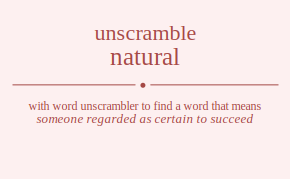

The word found after unscrambling natural means that someone regarded as certain to succeed, a notation cancelling a previous sharp or flat, (craps) a first roll of 7 or 11 that immediately wins the stake, in accordance with nature; relating to or concerning nature, existing in or produced by nature; not artificial or imitation, existing in or in conformity with nature or the observable world; neither supernatural nor magical, functioning or occurring in a normal way; lacking abnormalities or deficiencies, (of a musical note) being neither raised nor lowered by one chromatic semitone, unthinking; prompted by (or as if by) instinct, (used especially of commodities) being unprocessed or manufactured using only simple or minimal processes, related by blood; not adopted, being talented through inherited qualities, free from artificiality, .
